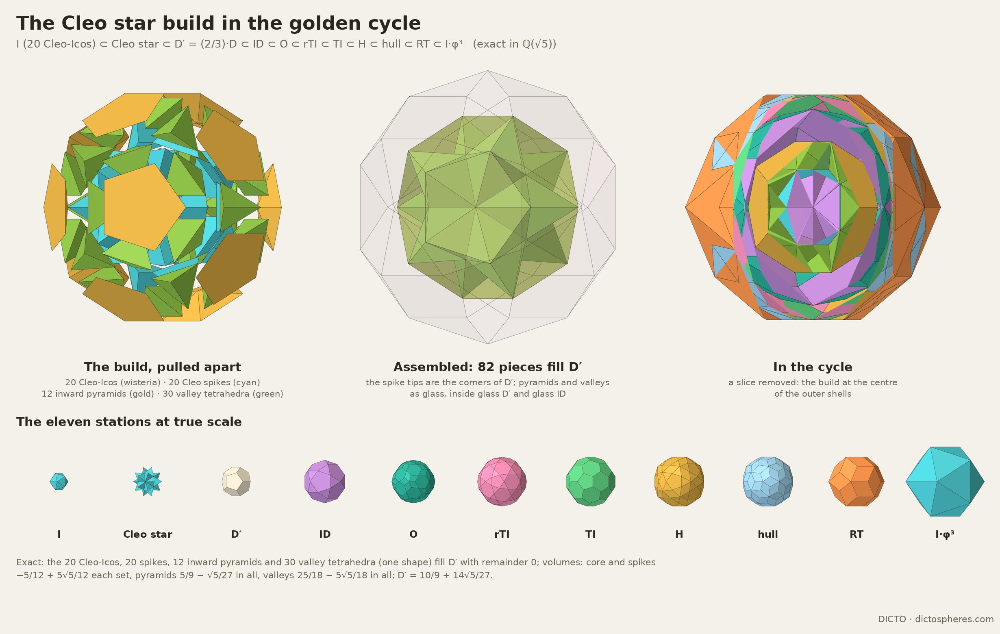
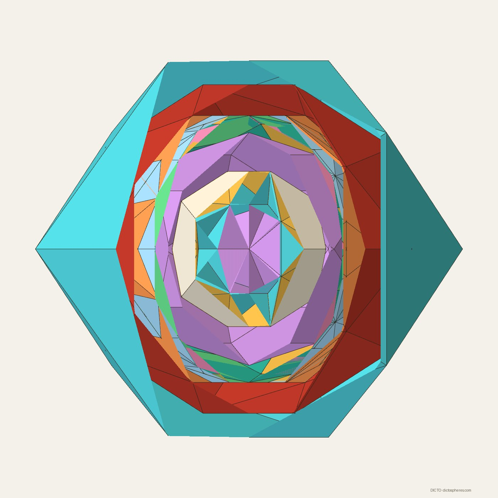

The DICTO Hecatodihedron and the DICTO Ogdoecontahedron in one exact golden cycle; the dodecahedron's return as the hull of the Cleo star; and the DICTO Metaxyhexecontahedron, which closes the cycle's last loose step
DICTO (artist, Osaka, Japan) · contact@dictospheres.com · https://dictospheres.com
Working draft (companion paper, split from Progenitors) · 16 October 2026 · DICTO DOI: on publication · Licence CC BY 4.0 · Data, scripts, exact checks and renders: https://github.com/DICTOR-Master/kaleidohedra (branch research: studies/2026-10-16-progenitors)
The idea of the two solids as progenitors of a new cycle, the truncated icosahedron's place, the Cleo star with the dodecahedron in it, the inward pyramids, the full-height icosidodecahedron star, the solid in the last gap and all names are DICTO's; the exact computations, searches and text were done with an AI assistant (Claude, Anthropic); a second model (Fable) advised on scope and publishing order.
Abstract. The DICTO Hecatodihedron H (102 faces) and its polar, the DICTO Ogdoecontahedron O (80 faces), were found inside the Spheres of Dharma, an exact cycle of icosahedral shells that repeats every φ³. DICTO asked whether the pair could seed a cycle of its own. Every solid in this paper is exact in ℚ(√5), and every nesting and volume is checked with remainder 0 unless marked float. On their own the pair do not close golden: H, O and their classical relatives, nested tightly in every order (8,742 cycles), never return on a power of φ, and the tightest 3-cycle gains exactly 9/φ⁴ per round. But with O in the dodecahedron's place, the Spheres of Dharma close again on φ⁹ in volume: I ⊂ ID ⊂ O ⊂ rTI ⊂ TI ⊂ H ⊂ jtI ⊂ RT ⊂ I·φ³. The cycle then holds the core and hull of both classical compounds, ID/RT and rTI/jtI. The dodecahedron returns inside the icosidodecahedron, as the hull of DICTO's Cleo star: the icosahedron's 20 Cleo-Icos with 20 more turned outward have their tips exactly at (2/3)·D, and 82 pieces of four kinds fill that dodecahedron exactly. The cycle's last loose step, from the rhombic triacontahedron to the next icosahedron, is closed by the DICTO Metaxyhexecontahedron: the member of the dodecahedron–icosahedron hull family whose icosahedron edge is 9/φ⁴ times its dodecahedron edge. It touches both neighbours, and both of its layers are a single kind of piece. Its dual closes the same step in the polar-reversed cycle. Prior-art status is stated claim by claim in §7.
1. The question
The Spheres of Dharma (DICTO DOI: 10.5281/zenodo.23310833) nest six icosahedral solids, icosahedron ⊂ icosidodecahedron ⊂ dodecahedron ⊂ truncated icosahedron ⊂ rhombic triacontahedron ⊂ icosahedron φ³ larger, each layer filled exactly by one kind of piece. Its in-between stage between the truncated icosahedron and the triacontahedron is the DICTO Truncated-Icosahedral Hecatodihedron H (DICTO DOI: 10.5281/zenodo.23360857): 12 pentagons, 30 rhombi and 60 triangles, the joined truncated icosahedron jtI with its 12 five-fold corners cut flat (Version 2 of that paper). Its polar is the DICTO Ogdoecontahedron O (DICTO DOI: 10.5281/zenodo.23404688): 20 regular hexagons and 60 kites, the canonical pentakis dodecahedron with its 20 three-fold corners cut flat. Both are derived from classical solids; neither is in the classical catalogues.
DICTO's question: let H and its dual be the progenitors of a new cycle. Can they nest into an exact, endlessly repeating cycle of their own, and does it close on a power of φ, as the Spheres of Dharma do? We write I, ID, D, TI, PD, RT for the icosahedron, icosidodecahedron, dodecahedron, truncated icosahedron, pentakis dodecahedron and rhombic triacontahedron, all in the Dharma's sizes (icosahedron edge 1/φ). Figure 1 shows the answer found in §3.
Figure 1. The golden cycle with both progenitors: I ⊂ ID ⊂ O ⊂ rTI ⊂ TI ⊂ H ⊂ hull (jtI) ⊂ RT ⊂ I·φ³. Top: O at 3φ²/4, nested inside the core rTI, cutaway and a front-on cut through the centre. Middle: O at its compound size 9/4, interlocked with TI and H. Bottom: the nine stations at true scale, and the H–O compound with its common core and hull. Drawn from exact stations.
2. On their own: no golden closure
The pair. H and O nest endlessly in each other, but the round trip does not close golden. H ⊂ s·O with s = 81/8 − 27√5/8 (20 corners touch), and O ⊂ t·H with t = (170 + 2√5)/361 (12 touch). The round trip is s·t = (3375 − 1107√5)/722 ≈ 1.246, which is not a power of φ.
The quartet. Adding the truncated icosahedron (DICTO: "maybe the truncated icosahedron has a place") and its dual PD gives four solids: TI ⊂ H and O ⊂ PD touch fully, and TI ↔ PD, H ↔ O are dual pairs. Taken in every cyclic order at the least size that holds the previous solid, none of the six orders closes on a power of φ. The tightest, TI ⊂ H ⊂ O ⊂ PD ⊂ TI, gains exactly (63 − 27√5)/2 = 9/φ⁴ = (3/φ²)² per round (exact). That is an endless cycle governed by 3, not by φ. It is the same factor 3 that keeps the two toggle settings of Double Vision apart (DICTO DOI: 10.5281/zenodo.23407106).
A wider search. All 8,742 cycles through TI, H, O and PD, together with any of I, ID, D and RT (each at most once, in any order), were tried. Each solid was set at the least size that holds the previous one, and none closes on a power of φ (exact). The criterion is strict: every step is tight. The Spheres of Dharma themselves fail it, since two of their steps, I → ID and RT → I·φ³, are loose. A golden cycle through the progenitors must therefore allow loose steps.
3. A golden cycle with both progenitors (exact)
The icosidodecahedron is a common core of both progenitors. O wraps it, with its 30 corners on O's faces and each triangle of ID inside a hexagon of O. Theaetetus grows it through Cleo-Icos to H (DICTO DOI: 10.5281/zenodo.23378070). Placing O on the Dharma's own ID, at scale 3φ²/4 (the middle setting of Double Vision), gives a cycle in which every step nests exactly:
I ⊂ ID ⊂ O ⊂ rTI ⊂ TI ⊂ H ⊂ jtI ⊂ RT ⊂ I·φ³
The closure is I·φ³ / I = 38 + 17√5 = φ⁹ in volume, golden as in the Spheres of Dharma. Here rTI is the rectified truncated icosahedron and jtI its dual, the joined truncated icosahedron. Table 1 lists the contacts. O and D cross, so O takes D's place; they are alternatives, as H and 3·I are in the Dharma.
Step
Contact (exact)
I ⊂ ID
loose (0 of 12 corners on ID's faces)
ID ⊂ O
tight: all 30 corners of ID on faces of O
O ⊂ rTI
loose
rTI ⊂ TI
tight: all 90 corners of rTI on TI's surface (its edges)
TI ⊂ H
tight: all 60 corners of TI on faces of H
H ⊂ jtI
tight: all 80 corners of H on faces of jtI
jtI ⊂ RT
tight: 80 corners of jtI on faces of RT
RT ⊂ I·φ³
loose (0 of 32 corners on faces of I·φ³)
Table 1. The nine-station cycle (exact). O at 3φ²/4; rTI, the core of the H–O compound, at the size it has in the truncated icosahedron's midsphere.
Both compounds in one cycle. The cycle now holds the core and hull of two dual compounds. ID and RT are the core and hull of the icosahedron–dodecahedron compound. rTI and jtI are the core and hull of the Hecatodihedron–Ogdoecontahedron compound, which DICTO named the DICTO Hecatogdoecontahedron: H and O interlocked in the truncated icosahedron's midsphere, 182 faces and 182 corners, self-dual. Its core and hull are those of the classical truncated icosahedron–pentakis dodecahedron compound, as #28 Version 2 explains. We claim only the pairing, not the core or the hull.
4. The dodecahedron returns: the Cleo star (exact)
With O in D's place, DICTO felt that "the dodecahedron should be in there too". The Dharma icosahedron is 20 Cleo-Icos, pyramids from the centre over its faces (Theaetetus, DICTO DOI: 10.5281/zenodo.23378070). Turning 20 more outward as spikes makes the Cleo star (volume 2·I). Its 20 tips are exactly the corners of (2/3)·D, the Dharma dodecahedron at two thirds. That the tips form a dodecahedron is elementary, since they lie on the three-fold axes at one radius; the size is the Dharma-specific fact. This dodecahedron D′ fits loosely inside ID and inside O, so the dodecahedron returns in the old loose step I → ID:
I ⊂ Cleo star ⊂ D′ ⊂ ID ⊂ O ⊂ rTI ⊂ TI ⊂ H ⊂ jtI ⊂ RT ⊂ I·φ³
D′ filled exactly. The gap D′ − star is one connected region (float flood fill). DICTO placed 12 inward pentagonal pyramids in it, one on each face of D′ with its apex at the icosahedron corner below. What is left is 30 valley tetrahedra, one along each edge of I, with corners at the edge's two ends and at the tips of the two spikes beside it. All 30 are one shape. The 82 pieces of four kinds fill D′ with remainder 0 (Table 2, Figure 2). The Cleo star is not a stellation of the icosahedron: its spike faces lie in no face plane of I. It is the triakis icosahedron (a Kleetope of I) at one particular height.
Piece
Count
Volume in all (exact)
Cleo-Ico, core (the icosahedron)
20
−5/12 + 5√5/12
Cleo-Ico, spike
20
−5/12 + 5√5/12
inward pentagonal pyramid
12
5/9 − √5/27
valley tetrahedron
30
25/18 − 5√5/18
D′ = (2/3)·D
82
10/9 + 14√5/27 (remainder 0)
Table 2. The Cleo star build of D′.

Figure 2. The Cleo star build: pulled apart, assembled inside glass D′ and ID, and at the centre of the cycle; the eleven stations at true scale. Drawn from exact pieces.
5. The last loose step: the DICTO Metaxyhexecontahedron (exact)
In the Spheres of Dharma the triacontahedron reaches only 0.812 of the way to the next icosahedron's faces. Looking at the cycle, DICTO judged that one more solid should fit there. Among the convex icosahedral solids, none touches both RT and I·φ³ (Table 3, float). The dodecahedron–icosahedron hull family, however, contains exactly one member that does. It is the convex hull of the RT's 12 five-fold corners and the 20 face centres of I·φ³. DICTO named it the DICTO Metaxyhexecontahedron M, from the Greek metaxý, "in-between", and 60 faces.
Shape. 32 corners (12 five-fold, 20 six-fold), 90 edges and 60 congruent isosceles triangles: the same combinatorics as the pentakis dodecahedron. Its icosahedron edge is exactly 9/φ⁴ times its dodecahedron edge (squared, 81(47 − 21√5)/2 = 81/φ⁸), ≈ 1.31308. The family is fully symmetric for ratios from (5 + 3√5)/10 to φ. Its named members are the Catalan pentakis dodecahedron, at 3(7 + 5√5)/38 ≈ 1.435, and the DICTO Palintriacontahedron of §6, at 3/√5 ≈ 1.342.
Fit. The RT lies inside M, and its 12 five-fold corners are M's own. M lies inside I·φ³, and its 20 three-fold corners sit on the centres of I·φ³'s faces. In Dharma units the squared corner radii are 45/8 − 9√5/8 and 47/24 + 7√5/8. M has an insphere (all 60 faces at one distance) but no midsphere, because its two kinds of edge sit at different distances.
Pieces. Cut as in Inverted Shells (one piece per face of the inner solid, cut by the cone over that face), both new layers are a single kind of piece. RT → M gives 30 pieces, each with 6 corners (a rhombus and 6 triangles) and volume 353/72 − 149√5/72. M → I·φ³ gives 60 pieces, each with 5 corners and 6 triangles (a triangular bipyramid shape) and volume 1/8 + √5/18. vol M = 145/12 + 65√5/12, and M takes 0.356 of the step's volume.
Its dual. Because M has an insphere, its polar has all 60 corners on one sphere. It has 12 regular pentagons and 20 hexagons whose sides alternate in the ratio (14 + 9√5)/11 ≈ 3.102: an icosahedron cut by a dodecahedron, a truncated icosahedron of non-Archimedean depth. In the ends sphere of Double Vision (ρ² = φ²/4), it sits between the polars of I·φ³ and RT. All 60 of its corners lie on the faces of polar(RT), and the 20 corners of polar(I·φ³) touch its hexagons. So it closes the matching loose step of the reversed cycle (exact).
An observation. 9/φ⁴ is also the exact gain per round of the tightest progenitor 3-cycle in §2. We note the coincidence without an explanation.
Solid, just big enough to hold RT
Reach toward I·φ³'s faces (float)
Hecatodihedron
0.9948
icosidodecahedron; Palintriacontahedron
0.9787
deltoidal hexecontahedron
0.9443
truncated dodecahedron
0.9325
pentakis dodecahedron
0.9149
rhombicosidodecahedron
0.8754
truncated icosahedron
0.8682
dodecahedron; triakis icosahedron
too big
DICTO Metaxyhexecontahedron
1 (exact)
Table 3. Candidates for the RT → I·φ³ step. 1 means touching both neighbours.

Figure 3. The DICTO Metaxyhexecontahedron (brick red) in the cycle, between the rhombic triacontahedron (orange) and the next icosahedron (cyan); a slice facing the viewer removed. Drawn from exact stations.
6. The seam: the DICTO Palintriacontahedron
DICTO also flipped the icosidodecahedron's own central pyramids out at full height ("shortening feels like cheating; one more solid is needed"). The hull of the tips is the DICTO Palintriacontahedron X (Greek pálin, back): 32 corners and 60 faces, each half a rhombic-dodecahedron rhombus (cos² of the face angles 1/9, 1/3, 1/3). Its icosahedron edge is exactly 3/√5 times its dodecahedron edge (squared, 9/5). X is the rhombic triacontahedron turned inside out: it has the same 32 axes, with the reciprocal radius ratio. It belongs to the same family as M. As a float observation only: X lies inside the next turn's D′, and 99.46% of its volume (20,000 sample points) lies inside the next icosahedron's Cleo star, so it bridges one turn to the next. As a further float observation, the first stellation of the icosahedron puts its tips at 3/√5 times the face distance, the same number. Figure 4.
Figure 4. The icosidodecahedron star and its hull X, the DICTO Palintriacontahedron; X interlocked with the next icosahedron. Drawn from exact corners.
7. Relation to known work, and status
Known, cited, not claimed. Nested Platonic solids go back to Kepler (1596), and nested icosahedral shells appear in virology and fullerene work (Dechant et al. 2014). The pentakis dodecahedron as the convex hull of a dodecahedron and an icosahedron, and its fully symmetric range, are on the Polytope Wiki. The Catalan member and the biscribed member are listed by MathWorld and McCooey. The truncated icosahedron–pentakis dodecahedron compound, the rectified truncated icosahedron and its dual jtI are classical (MathWorld; Wikipedia; McCooey). The Kleetope construction is from Grünbaum. The Cleo-Icos are Hypsicles' central pyramids (Euclid, Elements, "Book XIV"). Polar reciprocation is classical.
Not found, in the sources checked: a golden cycle containing H and O, or the core and hull of both compounds. The exact four-kind filling of (2/3)·D by the Cleo star with inward pyramids and valley tetrahedra was not found either. The Metaxyhexecontahedron and the Palintriacontahedron were not found as named members of the hull family, nor the 9/φ⁴ and 3/√5 members as distinguished. The names "Metaxyhexecontahedron", "Palintriacontahedron" and "Hecatogdoecontahedron" return no results.
Searched (16 October 2026). Wikipedia, MathWorld, the Polytope Wiki, Klitzing, OEIS, McCooey's Visual Polyhedra, G. Hart's Virtual Polyhedra (index, compound list and the full alphabetic model list: compounds of the uniform solids with their duals, the rhombic enneacontahedron, the pentakis dodecahedron; none of the solids or cycles here), Wenninger's model lists, Wassell and Benito (2012) and Bridges 2017 (dual-pair edge ratios; the former found the dodecahedron–icosahedron ratio φ : 3 absent from the literature until 2012), arXiv (nested golden shells, polar sequences, dodecahedral dissections), and the DICTO reference library.
Antiprism (A. Rossiter, version 0.29), run 16 October 2026: it recomputes the solids independently, and a sweep of every Conway form with up to two operators on I and D (840 forms) matches neither H nor O, while the H–O core and hull, M, X and M's dual have the structures stated here.
Not read. Wenninger's Polyhedron Models and Dual Models in print; Coxeter, Cromwell and Holden in print. The Stella catalogue was not run. Every "not found" above is limited to the sources listed; the full log is in the study (SEARCH-LOG.md).
8. Conclusion
The progenitors do not make a golden cycle on their own: tight nestings of H, O and their classical relatives are governed by the factor 3, as in Double Vision, and never close on a power of φ. Set into the Spheres of Dharma, with O in the dodecahedron's place, they close golden at once. The cycle then holds the core and hull of both dual compounds, the classical one and DICTO's. Nothing is lost. The dodecahedron comes back as the hull of the Cleo star, exactly at two thirds, and is filled by 82 pieces of four kinds. The one step the Dharma left open, from the triacontahedron to the next icosahedron, is closed by a single solid that touches both sides, the DICTO Metaxyhexecontahedron. Both of its layers are a single kind of piece, and its dual does the same for the reversed cycle. The cycle reads I ⊂ Cleo star ⊂ D′ ⊂ ID ⊂ O ⊂ rTI ⊂ TI ⊂ H ⊂ jtI ⊂ RT ⊂ M ⊂ I·φ³, and repeats. Open: whether the loose step O ⊂ rTI has a similar closing solid; the 9/φ⁴ coincidence; and a physical build of the Metaxyhexecontahedron's two layers.
9. Reproducibility
In studies/2026-10-16-progenitors: pair_chain.py, quartet.py, golden_search.py (§2); o_dharma.py, oh_compound.py, core_hull_in_cycle.py (§3); cleo_star_station.py, inward_pyramids.py, progenitors_exact.py (§4, exact → progenitors-exact.txt); gap_member.py, gap_chain.py, gap_pieces_exact.py, metaxy_dual.py (§5); id_star.py (§6). Exact arithmetic is in ℚ(√5) (numbers a + b√5, a and b rational), with exact sign tests for every inclusion. The figures come from render_nine.html, render_cleo.html (composed by cleo_figure.py), render_full.html and render_idstar.html. The full record, with every step and its corrections, is in the study README and SEARCH-LOG.md.
References
DICTO, Spheres of Dharma: a second endless golden cycle of the icosahedral solids, through the icosidodecahedron, the fullerene cage and the rhombic triacontahedron, DICTO DOI: 10.5281/zenodo.23310833.
DICTO, The DICTO Truncated-Icosahedral Hecatodihedron (Version 2), DICTO DOI: 10.5281/zenodo.23360857.
DICTO, The DICTO Ogdoecontahedron, DICTO DOI: 10.5281/zenodo.23404688.
DICTO, Inverted Shells: The Spheres of Dharma Turned Inside Out, DICTO DOI: 10.5281/zenodo.23405029.
DICTO, Double Vision – Both Cycles in One Space, DICTO DOI: 10.5281/zenodo.23407106.
DICTO, Theaetetus: an icosahedron held exactly by its Cleo-Icos, grown to the DICTO Hecatodihedron in two exact stories, DICTO DOI: 10.5281/zenodo.23378070.
DICTO, AXE, CLEO and FUJI: the Gap Pieces of the Icosahedron, DICTO DOI: 10.5281/zenodo.23351291.
DICTO, Capturing the In-betweens: a Study of Transitional Polyhedral Shells, DICTO DOI: 10.5281/zenodo.23345502.
J. Kepler, Mysterium cosmographicum, Tübingen, 1596.
Euclid, Elements, Book XIII (tr. T. L. Heath, 1908); Hypsicles, "Book XIV".
B. Grünbaum, Convex Polytopes, Wiley (1967) (Kleetopes).
J. H. Conway, H. Burgiel, C. Goodman-Strauss, The Symmetries of Things, A K Peters (2008) (Conway polyhedron notation).
E. W. Weisstein, Pentakis Dodecahedron; Truncated Icosahedron–Pentakis Dodecahedron Compound, MathWorld, https://mathworld.wolfram.com.
D. McCooey, Visual Polyhedra: Archimedean–Catalan Hulls, Rectified Archimedean Solids, Biscribed solids, https://dmccooey.com/polyhedra (accessed 16 October 2026).
Rhombic enneacontahedron (Conway jtI, dual of the rectified truncated icosahedron), Wikipedia, https://en.wikipedia.org/wiki/Rhombic_enneacontahedron; Rectified truncated icosahedron, https://en.wikipedia.org/wiki/Rectified_truncated_icosahedron.
G. W. Hart, Virtual Polyhedra, https://www.georgehart.com/virtual-polyhedra/vp.html (alphabetic list read 16 October 2026).
A. Rossiter, Antiprism, polyhedron modelling software, version 0.29, https://www.antiprism.com.
P.-P. Dechant, J. Wardman, T. Keef, R. Twarock, Viruses and fullerenes: symmetry as a common thread?, Acta Cryst. A 70 (2014) 162–167, doi:10.1107/S2053273313034220.
S. R. Wassell, S. Benito, Edge-length ratios between dual Platonic solids: a surprisingly new result involving the golden ratio, Fibonacci Quarterly 50 (2012) 144–154.
M. J. Wenninger, Polyhedron Models, Cambridge University Press (1971); Dual Models, Cambridge University Press (1983) (not read; see §7).